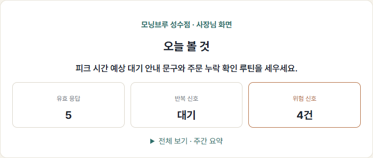

조용히 다시 안 오는 손님, 어느 날 터지는 악평. voxpop은 그 한마디를 공개되기 전에 비공개로 먼저 듣고, 손님과 사장이 무기명으로 풀고, 합의된 것만 공개합니다. 동네 사장님이 AI를 시작하는 가장 낮은 문턱입니다.
무기명 · 이름과 연락처 안 받아요 · 작은 가게 사장님을 위해

사장 대시보드
스크린샷 준비 중
불편해도 그 자리에서 따지는 손님은 드뭅니다. 공개 리뷰엔 보복이 무서워 진짜 불만을 안 씁니다. 대부분은 아무 말 없이 그냥 다시 오지 않습니다.
별점이 떨어진 뒤에야 문제를 압니다. 그땐 손님도 점수도 안 돌아옵니다. AI가 중요한 줄 알아도 어디서 시작할지 막막합니다 — 미도입 1순위 이유가 "막연함"입니다.
대기업은 벌써 AI 전환으로 격차를 벌리는데, 동네 사장님의 AI 활용은 한 자릿수~30%대에 머뭅니다. 좋은 기술은 늘 자본에 먼저 갔습니다. AI는 달라야 합니다.
받아두기만 하는 수거함이 아닙니다. 공개 악평의 정직한 대안은 합의된 공개입니다. 무기명을 손님과 사장 사이의 완충재로 끼워, 익명이 벽이 아니라 다리가 되게 합니다.
매장에 둔 QR로 손님이 무기명 한마디를 남깁니다. 이름도 연락처도 없이, 공개되기 전에 사장님에게만 닿습니다. 한국어 엔진이 욕설과 개인정보를 가립니다.
사장이 답을 달면, 손님이 영수증 토큰으로 그 답을 다시 봅니다 — 신원은 끝까지 가린 채. 무기명이라 손님도 부담 없이, 사장도 감정적이지 않게 진짜 이야기를 나눌 수 있습니다.
양쪽이 동의한 좋은 소통만 매장 공개 피드로 남깁니다. 합의 없이 터지던 악평의 대척점이, 합의된 좋은 소통의 공개 — 깨지지 않는 평판 자산입니다.
그리고 이건 동네 사장님이 AI를 처음 써보는 가장 낮은 문턱입니다.
QR 하나 붙이면 손님 한마디가 "오늘 할 일"로 정리됩니다.
기획서 속 아이디어가 아닙니다. 손님 폼부터 사장 대시보드까지 풀스택 웹으로 실제로 돌아갑니다. 1인 창업자가 기획·설계·개발·운영을 한 바퀴 돌려 만든 작동 MVP입니다.
QR로 들어와 무기명 한마디를 남기는 화면. 이름·연락처를 받지 않고, 남긴 순간 욕설·개인정보가 가려집니다.
가려진 한마디, 반복 신호, 위험 신호, 오늘 볼 것을 정리해 보여줍니다. 사장은 설정할 게 없습니다.
가림, 직접 해보세요
"QR 익명 피드백 + AI 분석"은 해외에 실재합니다(Ovation·AnonymousFeed 등 직접 경쟁 7곳, 한국 진출 0). 하지만 무기명·한국어 안전 가림·내부 순환을 한 묶음으로 하는 곳은 조사 시점 없습니다.
전화번호도 안 받습니다. 손님 식별·분기가 전제인 해외 라우팅형보다 더 익명입니다.
욕설·전화번호·계좌·직원 지칭·명예훼손 위험을 한국어로 가립니다. 해외 누구도 안 하는 도메인 특화 — 모방 비용이 큽니다.
연락처로 손님을 재마케팅하지 않습니다. 트래픽·데이터·관계가 voxpop 안에 남습니다.
시장은 외식 전체로 크게 잡되, 첫 진입은 공개 리뷰 압박이 가장 큰 커피·소형 외식으로 좁힙니다. "TAM 46만 카페"가 아니라, 교두보는 커피전문점이고 SAM은 단일·소형 외식입니다.
시장 규모는 항상 응답률 천장과 함께 봅니다 — 무보상 QR 자발 응답률 천장은 2~5%(SIRA 벤치마크)입니다. 매장 수가 많아도 매장당 신호 밀도가 바닥이면 SOM 실효가 흔들리므로, 닫힌 고리 장치와 QR 노출 지점으로 응답 밀도를 끌어올립니다. 등 뒤엔 정부 우호 동력이 있습니다 — 2026 소상공인 예산 약 5.4조 원, AI 활용지원 신규 편성(이는 voxpop이 직접 먹는 시장이 아니라 소상공인이 AI를 시작하기 좋아진 외부 환경입니다).
매끄러운 3막이 아니라 단계를 잇는 사다리입니다. 각 단을 잇는 것은 서사가 아니라 통과 조건 — 한 단을 실제로 증명해야 다음 단으로 갑니다.
공개하기 어려운 솔직한 목소리를 무기명으로 받아 "오늘 할 일"로 바꾸는 비공개 채널. 가치 제안은 "더 많은 피드백"이 아니라 "공개되기 전에 먼저 듣는다"로 좁힙니다.
쐐기가 선 뒤 같은 카페 고객에게 두 번째 운영 가치를 붙이거나, 같은 엔진을 공공 민원·조직 건의·시설·환자 경험으로 넓힙니다.
손님 목소리가 "오늘 할 일"이 되는 경험이 사장의 첫 AI 성공 체험이 되고, 그 신뢰가 다음 운영 결정으로 넓혀집니다. 게이트B 전까지 AX는 마일스톤이 아니라 방향입니다.
voxpop은 1인 창업이지만 창업자-시장 적합으로 승부합니다 — 문제를 직접 겪은 당사자가 그 문제를 풀 작동 제품을 혼자 만들어냈습니다.
배달앱으로 시킨 짬뽕이 정말 별로였습니다. 면이 불고 국물이 밍밍했는데, 리뷰엔 칭찬뿐이었습니다. 욕도 비방도 아니게, 처음으로 솔직한 한 줄을 남겼습니다. 그 글은 지워졌고, 7일간 리뷰를 못 쓰게 됐습니다.
화났다기보다 멍했습니다. 까다롭지도 않은 사람이 처음 한 솔직한 말이 그냥 사라진 겁니다. 찾아보니 개인 일화가 아니라 구조였습니다 — 업주 요청만으로 부정 리뷰가 가려지고, 후기의 65.2%가 보상 이벤트로 쓰이며 그 98.3%가 실제보다 높게 평가합니다(한국소비자원 2024). 그래서 voxpop을 만듭니다. 공개 리뷰의 반대편, 사장만 보는 비공개 채널을.
사장님은 베타로 직접 써보고, 손님은 1분 설문으로 무엇이 필요한지 알려주고, 투자자는 정본과 덱으로 사업 전체를 봅니다.
무기명 · 이름·연락처 안 받음 · 작동하는 제품 · 만들어가는 과정을 그대로 공유합니다